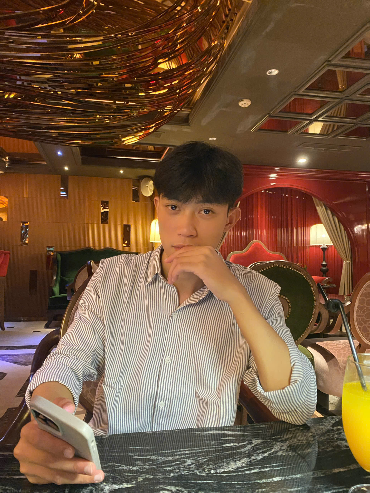

Kiến thức và kỹ năng âm nhạc
Phát triển kiến thức chuyên môn và kỹ năng biểu diễn âm nhạc.
PORTFOLIO HỌC TẬP · 2026
Một không gian ghi lại hành trình học tập, thử nghiệm và trưởng thành trong môi trường số.
GIAO ĐIỂM ÂM NHẠC & CÔNG NGHỆ
MUSIC JOURNAL · UNDER THE OCEAN
Dùng chuột, chạm hoặc bàn phím: A W S E D F T G Y H U J
01 / GIỚI THIỆU

Xin chào! Tôi tên là Nguyễn Huy Quang, hiện đang theo học ngành Sư phạm Âm nhạc. Tôi có niềm đam mê với âm nhạc, yêu thích khám phá và sáng tạo. Động lực học tập của tôi là không ngừng nâng cao kiến thức, kỹ năng âm nhạc và tìm hiểu cách ứng dụng công nghệ AI vào học tập cũng như sáng tạo âm nhạc. Thông qua portfolio này, tôi mong muốn chia sẻ hành trình học tập, những trải nghiệm và các sản phẩm sáng tạo của bản thân.
02 / ĐỊNH HƯỚNG
Phát triển kiến thức chuyên môn và kỹ năng biểu diễn âm nhạc.
Nâng cao khả năng chơi piano, thanh nhạc và cảm thụ âm nhạc.
Khám phá, ứng dụng công nghệ AI vào giáo dục và sáng tạo âm nhạc.
Phát triển kỹ năng sư phạm, hướng đến trở thành giáo viên âm nhạc có chuyên môn và khả năng sáng tạo.